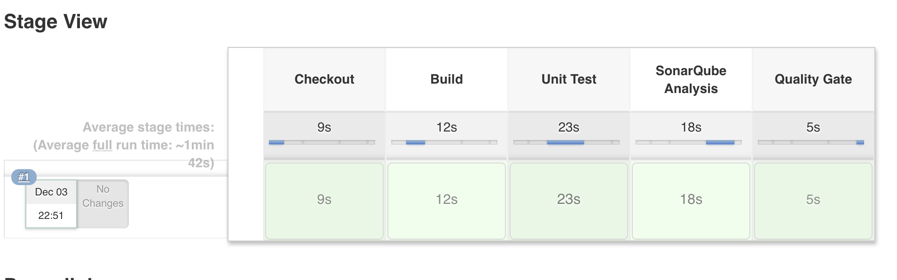

In this lab, you will build a complete CI/CD pipeline. It builds Feature, Develop and Release Branch Jobs and Orchestrates a release from Dev->Test->Prod.
Review Pipeline Library Functions.
Browse openshift-cicd-pipeline github repository.
https://github.com/Vizuri/openshift-cicd-pipeline
Navigate to src -> com -> vizuri -> openshift.
Review the functions in PipelineSteps.groovy.
Next review the Pipeline defined in JavaDeliveryPipeline.groovy.
Update Jenkinsfile
Now back your Jenkinsfile to Jenkinsfile.BAC.
Update the Jenkins File with the following contents.
!/usr/bin/groovy
@Library('github.com/vizuri/openshift-cicd-pipeline@master')
def javaDeliveryPipeline = new com.vizuri.openshift.JavaDeliveryPipeline();
javaDeliveryPipeline {
ocpAppSuffix = 'apps.ocpws.kee.vizuri.com'
imageNamespace = 'student_55';
registryUsername = 'student-55'
imageBase = 'quay.apps.ocpws.kee.vizuri.com'
registryUsername = 'student-55'
registryPassword = 'workshop1!'
app_name = 'customer'
ocp_dev_cluster = 'ocp-ws'
ocp_dev_project = 'student-55-customer-dev'
ocp_test_cluster = 'ocp-ws'
ocp_test_project = 'student-55-customer-test'
ocp_prod_cluster = 'ocp-ws'
ocp_prod_project = 'student-55-customer-prod'
}
Configure Gogs Jenkins WebHook
Log into Gogs
http://gogs.apps.ocpws.kee.vizuri.com
Select the customer-service project.
Click on the Settings link in the top right.
Choose Webhooks.
Click Add Webhook and select Gogs.
Enter the following values.
Click Save.
Test Feature Branch
Create a new branch called feature/Feature-1 in the Gogs Repository.
Watch build trigger a new Feature build.
The following steps will be executed.

Test Develop Branch
Create a Pull Request and merge the Feature Branch into the Develop Branch.
This will trigger the Develop branch build and deploy to development.
Release Develop Branch
Create a release branch called release/1.0
This will trigger a release pipeline